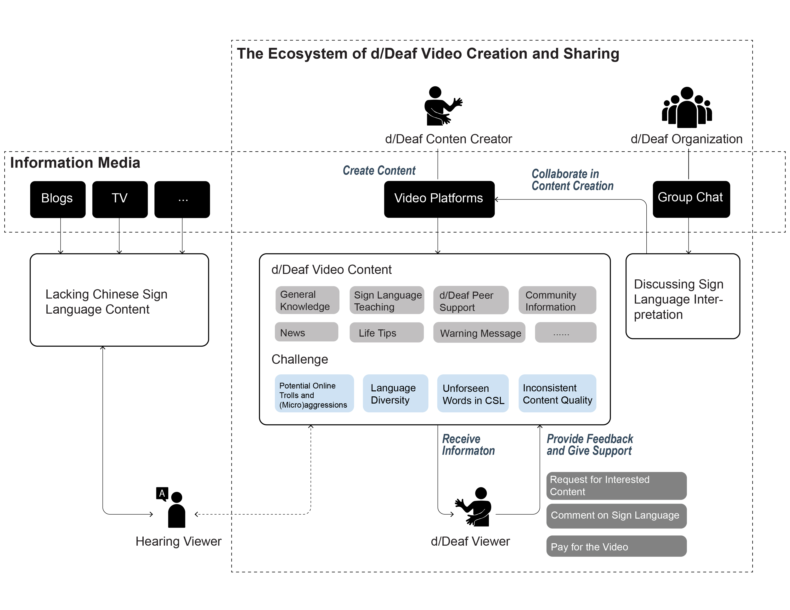

Xinru Tang
2nd year M.S. Student at UCI
Pronoun: She/Her
Contact: xinrut1@uci.edu
Research Interests: Human-Computer Interaction (HCI), Computer-supported Collaborative Work (CSCW), inclusive design, accessibility, digital inequity
My research is often motivated by my observation of people’s everyday life and existing practices, and I often pay attention to the sociocultural context of people’s technology use. I particularly enjoy finding design opportunities from people’s lived experiences and iterating my thoughts through the research process. Below are my past research projects.
1. Family Support to Older Adults' Technology Learning and Use
Motivation: Older adults often face challenges in technology learning and use, especially nowadays new technology is constantly evolving. Intuitively, family members are important support sources of older adults in technology learning and use. However, the support process is often challenging due to difficulties in teaching, disagreements upon technology use, etc. We dived into the family dynamics to explore the challenges and opportunities in family collaboration in supporting older adults' technology learning.
Results: The work uncovered a typical family support pattern as below, which highlights the challenges and tensions in family support
that received little attention before:

Method: Interviews
Role: Lead Author
Publication: CSCW2022
2. d/Deaf People's Collaborative Content Generation
Motivation: The project was motivated by the most reported difficulties from the d/Deaf people I connected with, i.e., sign language information access.
Through talking with d/Deaf people I connected with, I found that d/Deaf people in China face significant challenges in accessing sign language information (check out d/Deaf people in China for more details). I also found that many of my participants
enjoy watching sign language videos created by and for d/Deaf people (I termed them as d/Deaf videos), which can be significant information sources (e.g., COVID-19 information)
and educational materials (e.g., learning about law-related sign language).
Seeing the potential of d/Deaf videos in d/Deaf people's information access,
I dived into the creation and sharing of these videos to show how d/Deaf people collaborated online to power community-driven information accessibility.
Results: We outline the eco-system of d/Deaf people's collaborative content generation and sharing on Chinese video sharing platforms as below. The eco-system shows the potential of video sharing platforms to support d/Deaf community-driven information accessibility.
 Takeaways:
Method: Interviews, Content Analysis, Online Observation
Role: Lead Author
Status: Under Review (I only share the general findings of the project here. The
sharing is upon the permission of my collaborators.)
Note: 1) I involved a Deaf professional in our research team out of my desires to have d/Deaf communities' own "voice" to be heard. 2) I will continue this project, extending the findings
as my Master's thesis.
3. Older Adults' Online Participation
3.1 Older Adult Content Creators on Short Video Platforms
Motivation:
Takeaways:
Method: Interviews
Role: Lead Author
Status: Finished
3.2 Age-inclusive Online Communities
Motivation:
Takeaways:
Method: Content Analysis
Role: Assistant, 2nd Author
Status: Under Review
Others
Below are the other research projects I did during my undergraduate studies.
An Auto-display to Improve Work Experience of Crowd Workers

Overview:
Crowd workers are often disadvantaged because of lack of information about their working progress.
We introduce a low-cost interface to make them better informed of their working accuracy.
We make use of the website background color to provide in-time estimated accuracy to crowd workers.
Results show that the interface can help participants reflect on their working strategies and provide assurance during their works.
Method: Experiment, Survey, Interviews
Role: Lead Author
Publication: ECSCW2019-Exploratory Paper
Foodshow in China

Overview: Foodshow, i.e., user-generated videos in which the creators mainly eat food (see the picture above), is increasingly popular in China and other countries.
Out of curiosity why people enjoy watching such mundane activities, we conducted interviews with 12 foodshow viewers. Results show potential of foodshow to be embedded in
people's everyday life to serve their health needs.
Method: Interviews
Role: Assistant
Publication: HICSS2022